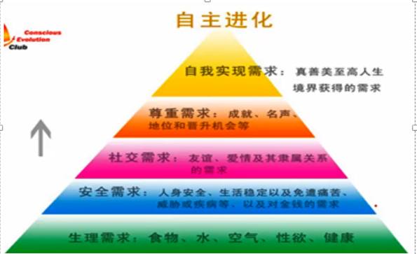
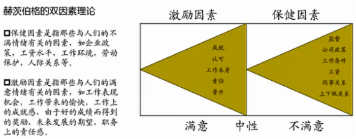
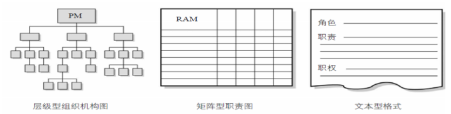
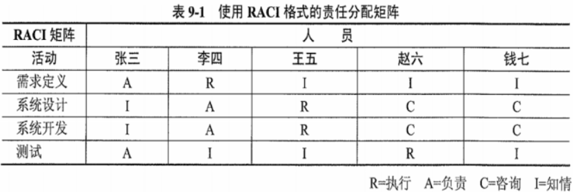

分值：3分
综合图谱

领导者的三方面工作
- 确定方向：为团队设定目标，制定战略
- 统一思想：协调人员，团结尽可能多的力量
- 激励和鼓舞：领导大家克服困难奋勇前进
项目经理具有领导者和管理者的双重身份。
人力资源管理计划的内容
- 角色与职责
- 项目的组织结构图
- 人员配备管理计划：可以是不正式的、不详细的
- 人员招募
- 资源日历
- 人员遣散计划
- 培训需要
- 认可与奖励
- 合规性
- 安全
团队建设的5个阶段
注意：不管目前是什么阶段，增加一个人或减少一个人，都要从形成阶段重新开始
- 形成阶段：个体转变为团队成员，开始形成共同目标
- 震荡阶段：遇到困难，个体之间相互争执、相互指责
- 规范阶段：一段时间磨合，成员开始协同工作，相互信任
- 发挥阶段：集体荣誉感非常强
- 解散阶段：项目结束，团队解散
项目经理的5种权利
项目经理应该注重运用奖励权力、专家权力和参照权力，避免使用惩罚权力
- 来自组织的职位和授权
- 职位权力
- 惩罚权力
- 奖励权力
- 来自管理者自身
- 专家权力：个人的专业技能
- 参照权力：成为别人学习参照榜样
处理冲突
- 冲突时不可避免的，项目经理应该积极的管理冲突，直接和合作的方式，私下处理冲突
- 不管冲突是正面的还是负面的，项目经理都有责任处理
冲突的特点：
- 冲突是自然地，而且要找到一个解决方法
- 冲突是一个团队问题，不是某人的个人问题
- 应公开的处理冲突
- 冲突的解决应聚焦问题，而不是人身攻击
- 冲突的解决应聚焦现在，而不是过去
冲突解决的方法：
- 撤退/回避：从实际或潜在冲突中退出，暂时的冲突解决方法
- 缓和/包容：强调一致，淡化分歧
- 妥协/调解：寻找让各方在一定程度上满意的方案
- 强迫/命令：以牺牲其他方为代价，推行某一方的观点
- 合作/解决问题：综合考虑不同意见，采用合作态度和开放式对话达成共识。最理想的结果
激励理论
- 马斯洛需求层次理论
- 生理需求：对衣食住行等需求
- 安全需求：人身安全、生活稳定、不失业，无疾病等
- 社会交往需求：对友谊、爱情和隶属关系的需求
- 受尊重的需求：自尊心和荣誉感
- 自我实现需求：实现自己的潜力，发挥个人能力

- 赫茨伯格双因素理论
- 保健因素：不满情绪相关的因素
- 激励因素：满意情绪相关的因素

- X理论（人性不好）
- 人性好逸恶劳，只要有计划就逃避工作
- 人生来就以自我为中心，漠视组织的要求。
- 人缺乏进取心，逃避责任，甘愿听从指挥，安于现状，没有创造性。
- 人们通常容易受骗，易受人煽动
- 人们天生反对改革
- 人的工作动机是为了获得经济报酬
- Y理论（人性好）
- 人天生并不是好逸恶劳，他们热爱工作，从工作得到满足感和成就感。
- 外来的控制和处罚对人们实现组织的目标不是一个有效的办法，下属能够自我确定目标，自我指挥和自我控制。
- 在适当的条件下，人们愿意主动承担责任。
- 大多数人具有一定的想象力和创造力。
- 在现代社会中，人们的智慧和潜能只是部分地得到了发挥，如果给予机会，人们喜欢工作，并渴望发挥其才能
- 期望理论：人的激励影响因素有两个
- 目标效价：实现该目标对个人有多大价值的主观判断
- 期望值：实现该目标的可能性的主观估计
项目组织结构图

层级型组织结构
- WBS工作分解结构：可交付成果分解成工作包
- OBS组织分解结构：根据部门、单元或团队排列，流出每个部分的工作包
- RBS资源分解结构：按资源类别分解
RAM责任分配矩阵
- 显示工作包或活动与团队成员之间的关系，任何任务都只有一个人负责

评价团队有效性的指标
- 个人技能的改进
- 团队能力的改进
- 团队成员离职率的降低
- 团队凝聚力的加强